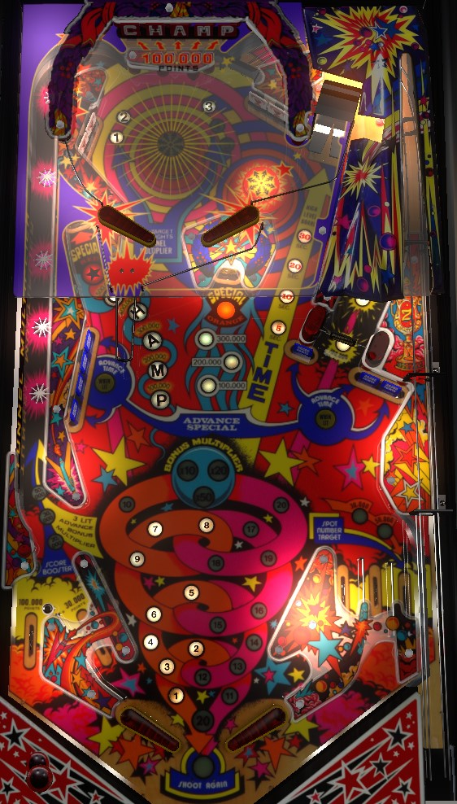

Pinball Champ is a rerelease of Pinball Champ '82 with rebalanced scoring. Differences in scoring between the two are mentioned throughout the guide as they are relevant, and marked as (1982 version) or (1983 version) for Pinball Champ '82 and Pinball Champ respectively.
Shoot the right spinner as frequently as possible. The points awarded when the spinner stops increases based on how many spins the spinner were recorded, up to 500,000 (1982 version) or 100,000 (1983 version). Completing the white standup targets at the top of the table or the blue drop target banks in the middle of the table advances the time remaining on the upper playfield; shoot the line labelled Time to make it up, and hit drop targets for 100,000 (1982 version) or 50,000 (1983 version) points apiece.
The below picture is of Pinball Champ '82, taken from the VPX version by 32assassin.
Hit a lit white standup target to unlight it. Lit targets score 50,000 points and a bonus advance; unlit targets score 30,000 and a bonus advance (reduced to 5,000 and 3,000 for 1983 version). Completing the upper standup targets causes the star rollovers in the Tunnel Multiplier lane on the left to start flashing.
The star rollovers have a base value of 20,000 points and a bonus advance each. Making the star rollover lane when it is flashing via a direct lower right flipper shot or a ricochet off the left pop bumper causes the point value of the star rollovers to increase to 30,000, then 50,000, and also causes the lane to stop flashing. If the star rollovers are flashing and their value is already 50,000, making the Tunnel Multiplier lane will reset the star rollovers back to 20,000 points, but will also advance the end of ball bonus multiplier in the sequence 10x-20x-50x. (In the 1983 version: star rollover values are 2,000-3,000-5,000 and bonus multiplier sequence is 2x-5x-10x.) Game settings may allow one trip through the Tunnel Multiplier to advance the value twice, so that it only takes 2 sets of a top targets completion + a Tunnel Multiplier trip to advance the bonus multiplier. Regardless, this feature is generally not worth pursuing for high score play.
The upper playfield is always available by shooting the flip ramp at the end of the lane labelled Time in the upper right. However, if you do not increase your Time first, you will only be allowed to stay on the upper playfield for 5 seconds before the flippers lock and the ball is allowed to drain to the main playfield. There are 2 ways to advance the upper playfield timer.
The Time always starts at 5 seconds, and can be advanced to 10, then 20, then 30 seconds. On the upper playfield, complete the red drop targets. Each target down scores 100,000 (1982 version) or 50,000 (1983 version) points. Completing the bank resets it and adds letters in Champ. The more letters in Champ are lit, the higher the value of the red standup target on the left side of the game. Completing the upper playfield drop target bank 1, 3, 4, or 6 times (operator adjustable) lights the red standup target for Red Special.
1982 version: the target scores 100,000 points for each Champ letter lit; the Red Special can score an extra ball, a free game, 4,500,000 points, or "superbonus", which consists of lighting the word Superbonus on the backglass as a way to signal an earned prize to a player.
1983 version: the target scores 30,000, 50,000, 80,000, 120,000, or 150,000 points depending on whether there are 1, 2, 3, 4, or 5 Champ letters lit. I have not confirmed what the Red Special point value is, but I would expect something around 500,000 points.
Point values can be collected from the red standup target repeatedly with no progress reset, but if a Red Special is scored, all lights in front of the target are unlit.
The spinner scores just 10 points per spin; however, the game keeps track of how many times the spinner actually spins before it stops. The more spins are registered, the more lights behind the spinner are lit; when the spinner stops, the highest lit value is awarded. Possible values are 100,000, 150,000, 200,000, or 500,000 on the 1982 version, or 30,000, 50,000, 80,000, or 100,000 on the 1983 version. It's not that hard to hit the spinner hard enough to earn the full value, so a direct shot to the spinner should be the priority of any ball in control on the main playfield left flipper unless the upper playfield timer has been advanced to 20 or 30 seconds.
Each blue drop target down in either bank scores 30,000 points (1982 version) or 3,000 points (1983 version). Completing either blue drop target bank (or completing both banks, on hard settings) advances the value of the orange standup target in the center of the playfield; the sequence is 100,000 - 200,000 - 300,000 - Orange Special in the 1982 version, and 30,000 - 50,000 - 80,000 - Orange Special in the 1983 version. Orange Special can score a free game, an extra ball, "superbonus", or 1,000,000 points in the 1982 version; I would expect the same options for 1983 version, but with a point value closer to 100,000. Any point value can be collected from the center standup target repeatedly, but collecting an Orange Special resets all of the lights in front of the center target.
The bottom of the table on Pinball Champ is mostly conventional. Working from the center of the table outwards, there is a flipper, an in lane, and an out lane. The left out lane scores 100,000 points. The left in lane is angled to match the exit direction of a ball leaving the Tunnel Multiplier; this also means the left in lane is shorter than the right, and it is possible for a ball approaching a raised left flipper quickly to roll up the flipper, up the in lane, and into the out lane. The right out lane scores 50,000 points. Both in lanes score 30,000 points. All in/out lanes score a bonus advance.
On the right side, to the right of the right out lane, is a kickback lane. This lane can be used repeatedly. Any visit to this lane spots one of the 1-2-3-4-5 standup targets at the top of the main playfield. The first use of the kicker lane on a ball scores 30,000 points, and all future uses for the rest of the ball score 50,000 points.
All scoring in this "Bottom of the table" section describes the 1982 version. All in/out/kicker lane scoring in the 1983 version is 1/10th as much as the 1982 version.
Bonus is advanced by any standup target, drop target, or in/out lane. Bonus multiplier is advanced as described in the "Top of main playfield: upper white standup targets and Tunnel Multiplier lane" section above. Max bonus on Pinball Champ '82 is 50x 39,000 = 1.950,000 points. Max bonus on Pinball Champ is 10x 39,000 = 390,000 points. There is no mid-ball bonus collect and there is no way to hold over the base bonus or bonus count from ball to ball.
On the final ball of the game (e.g. ball 3 of a 3-ball game), the display reading "Balls to Play: 01" will change to "Game Time Bonus: 10" as soon as the ball enters the playfield. During this final ball, every 3rd switch hit anywhere on the playfield adds 1 to the Game Time Bonus. Immediately after this final normal ball drains, the Game Time Bonus begins. Game Time Bonus is a timed bonus ball with unlimited ball save for as long as there is time on the clock.
If you drain during Game Time Bonus: a new ball will be fed to the shooter lane and play continues with no penalty other than the clock continuing to run.
If you tilt during Game Time Bonus: the entire playfield will go dark and the ball will be allowed to drain, with no further points being scored. The entire end of ball bonus including multiplier will be reset without being scored. If there is still time on the clock when the ball reaches the out hole, play will continue.
When Game Time Bonus ends: all playfield lights will flash when there are less than 10 seconds left on the clock. When the clock hits 0, all playfield lights go dark and the ball is allowed to drain, with no further points being scored. After the ball reaches the out hole, your end of ball bonus is scored, and the game either enters Game Over mode or transitions to the next player, who will play their final normal ball immediately followed by their Game Time Bonus ball.
If you collect an extra ball during Game Time Bonus: the clock immediately stops, and the previous rule of "every 3rd switch adds 1 to the clock" applies. When the ball drains and the extra ball is used, the Game Time Bonus ball will continue.
Remember that all players play their Game Time Bonus ball immediately after their final standard turn, and that the Game Time Bonus clock continues to run while the ball is in the shooter lane waiting to be plunged.